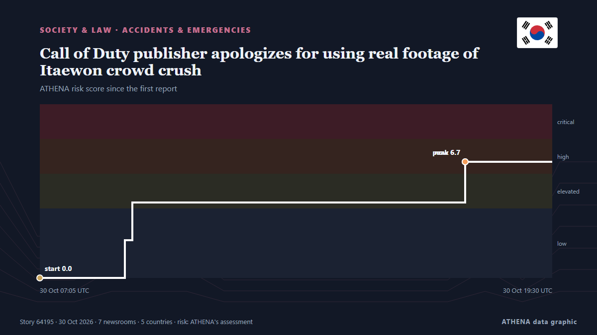

Droits de douane et contrôles
| 18 oct. | 0 |
|---|---|
| 19 oct. | 0 |
| 20 oct. | 0 |
| 21 oct. | 0 |
| 22 oct. | 0 |
| 23 oct. | 0 |
| 24 oct. | 1 |
| 25 oct. | 1 |
| 26 oct. | 1 |
| 27 oct. | 1 |
| 28 oct. | 4 |
| 29 oct. | 2 |
| 30 oct. | 3 |
| 31 oct. | 0 |
Les titres sont affichés en anglais, tels que publiés.

Call of Duty publisher apologizes for using real footage of Itaewon crowd crush
SEOUL, Oct. 30 (Yonhap) -- The makers behind the Call of Duty video game apologi... de Yonhap (English)
Trump opts for trade talks over tariffs for robotics, industrial machinery
For the second time this month, the president directed cabinet officials to negotiate over imports deemed a threat to U.S. commerce and security by a Section 232 probe. de Supply Chain Dive
Snow could hit parts of Croatia as temperatures begin to fall
October the 30th, 2026 – Croatia may see some snow next week as a dramatic weather change looms, bringing far colder temperatures and plenty of rain. de Total Croatia News
Ontario to provide fiscal update as tariff fight bites into budget
Ontario will provide a key economic update today after repeated warnings from the province’s treasurer that its mini-budget will be awash in red ink. de CBC News (alternative feed)
'Call of Duty' North Korea Invasion Edition Tops Sales Charts in South
A fictional North Korean invasion of Seoul is becoming fodder for a real political battle in South Korea, with the latest installment of the blockbuster Call of Duty franchise drawing politicians… de Korea Herald
6 changes for millions of drivers in John Healey Autumn Budget - full list
The Chancellor has unveiled a Budget that gives families and businesses breathing space, the Labour Party government has said. de Birmingham Mail
Costs cut on over 100 supermarket items including chocolate and baked beans in John Healey's Budget 2026
Changes to supermarket tariffs announced in today's Budget could save households money on their yearly shopping bill. de Liverpool Echo